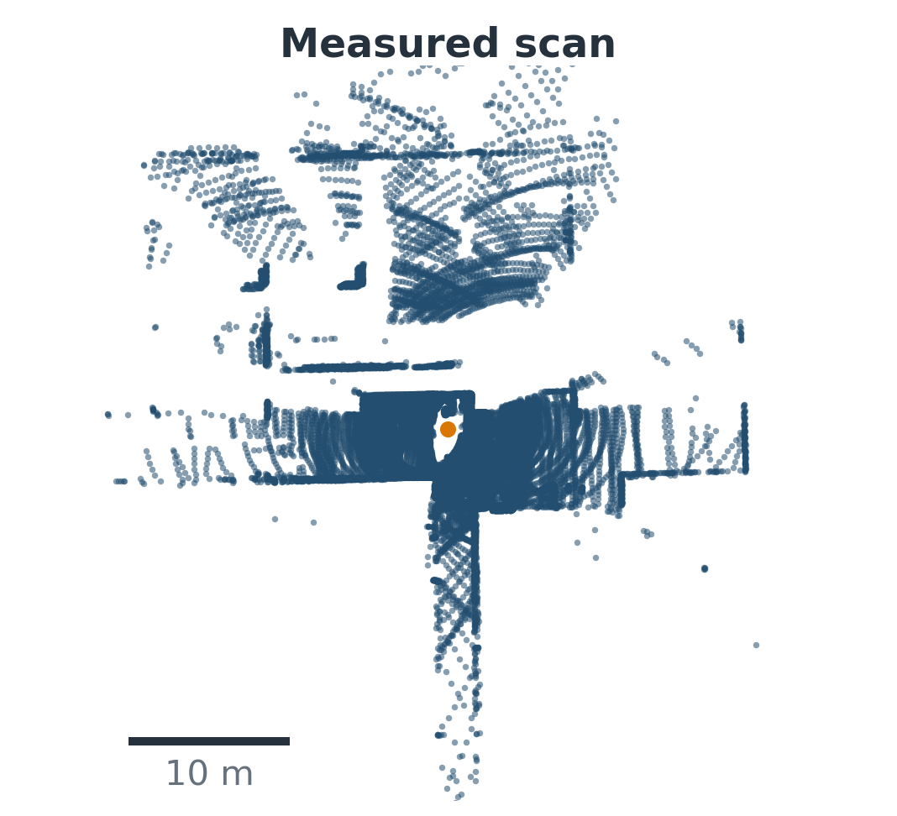
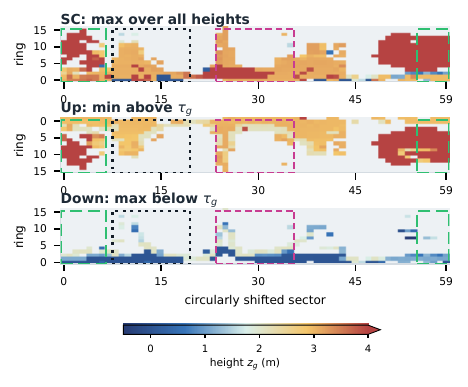
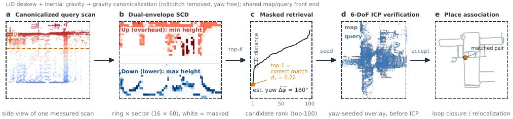
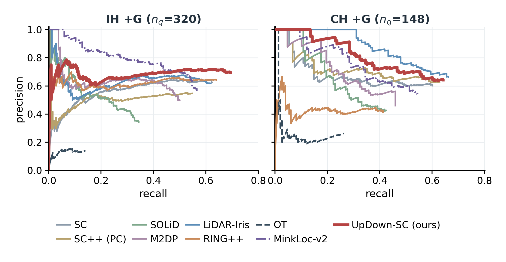

Anyverse Dynamics, Beijing, China · †corresponding author
Preprint · under review
LiDAR place recognition is a key front end for loop closure and global relocalization, yet indoor retrieval remains difficult when attitude or sensor mounting height changes between mapping and query sessions. Scan Context stores the maximum height in each polar cell; indoors, broad ceilings can therefore suppress the lower and mid-level geometry that distinguishes adjacent rooms and corridors. We present UpDown-SC, a training-free polar descriptor that first canonicalizes gravity and then represents two complementary surfaces: the upper envelope of lower/middle structures and the lower envelope of overhead structures. Their physical split is estimated once from a cell-balanced map height distribution and reused by every query. A mask-aware, non-uniform two-channel distance retains discriminative lower-level evidence while limiting sensitivity to its cross-session variation. Conventional Scan Context shortlisting and circular yaw alignment are retained, so retrieved hypotheses directly initialize geometric verification. Experiments across repeated indoor sessions, mounting-height changes, mixed outdoor-to-indoor trajectories, and an outdoor transfer sequence show more reliable first-choice retrieval on the indoor and mounting-height-varied sessions, together with the best or second-best F1max and AUPR under threshold-based acceptance, while retaining a lightweight CPU front end.
2:59 overview — animated method intuition, measured retrieval experiments including learned zero-shot baselines, and continuous prior-map localization.

One measured indoor query (top view).

Dual-envelope descriptor: Up (min above the split) and Down (max below).

Pipeline: gravity canonicalization with free yaw → ground-relative heights via a measured descriptor-origin height → cell-balanced adaptive split (map-level, reused by queries) → masked non-uniform two-channel matching with yaw hypotheses.
Recall@1 / Recall@5 (%) under the shared gravity-canonicalized (+G) protocol. Each metric is ranked independently within a dataset: bold blue marks the best result and underlining marks the second-best result; ties share the same rank.
| Method | IH (n=320) | CH (n=148) | H1→H2 (n=58) | H1→V1 (n=57) | M2DGR (n=28) | NC (n=60) |
|---|---|---|---|---|---|---|
| SC + G | 62.5 / 79.4 | 60.1 / 82.4 | 39.7 / 67.2 | 47.4 / 78.9 | 96.4 / 96.4 | 98.3 / 100 |
| SOLiD + G | 34.4 / 55.6 | 42.6 / 69.6 | 39.7 / 60.3 | 36.8 / 61.4 | 92.9 / 100 | 53.3 / 88.3 |
| LiDAR Iris + G | 61.9 / 76.2 | 66.2 / 91.2 | 44.8 / 69.0 | 61.4 / 86.0 | 85.7 / 92.9 | 95.0 / 100 |
| RING++ + G | 64.1 / 87.8 | 41.2 / 73.0 | 31.0 / 67.2 | 26.3 / 59.6 | 85.7 / 100 | 100 / 100 |
| OT + G | 12.5 / 31.9 | 27.0 / 49.3 | 8.6 / 20.7 | 12.3 / 22.8 | 42.9 / 78.6 | 68.3 / 95.0 |
| MinkLoc-v2 + G | 54.7 / 80.9 | 52.0 / 83.1 | 15.5 / 56.9 | 19.3 / 52.6 | 50.0 / 96.4 | 83.3 / 93.3 |
| UpDown-SC (ours) | 69.4 / 86.9 | 64.2 / 87.2 | 48.3 / 70.7 | 54.4 / 82.5 | 92.9 / 100 | 96.7 / 100 |
IH: in-house two-session indoor pilot; CH: RTK-SLAM Construction Hall (public, mixed outdoor-to-indoor); H1→H2 / H1→V1: independent hand-carried and vehicle-mounted replays against a hand-carried map; M2DGR: public surveyed-truth hall (VLP-32C); NC: Newer College outdoor transfer. OT uses its official KITTI checkpoint and MinkLoc-v2 its official Oxford-only checkpoint, both zero-shot. Full tables, Wilson intervals, McNemar tests, and per-query CSVs are in the paper and repository. Abridged here — see the paper for all nine baselines and native protocols.

Threshold-based acceptance: precision–recall over each method's top-1 confidence (IH+G and CH+G).
The repository contains a
standalone, ROS-free C++ implementation of UpDown-SC (Eigen + PCL + yaml-cpp),
audited formula-equivalent Python baselines, per-dataset evaluation protocols,
and figure generators. The data package ships deskewed keyframe sessions
(clouds, poses, gravity, descriptor parameters, SCDs) and every recorded
per-query result CSV; regenerating descriptors from the released clouds was
verified byte-identical. Every number in the paper traces to a CSV
(docs/PROVENANCE.md). Compact checked result bundles and an
automated build/replay preflight are available directly in the repository.
@misc{xu2026updownsc,
title = {UpDown-SC: A Gravity-Canonicalized Dual-Envelope Scan Context
for Indoor LiDAR Place Recognition},
author = {Xu, Jie and Yang, Yongxin and Jin, Ziyi and Yu, Kangjin and
Huang, Hongjun and Han, Chao and Xia, Zhongpu},
year = {2026},
note = {arXiv preprint (identifier to appear)},
}
© 2026 Anyverse Dynamics · MIT-licensed code · Music in the overview video: "Inspired" by Kevin MacLeod, CC BY 4.0